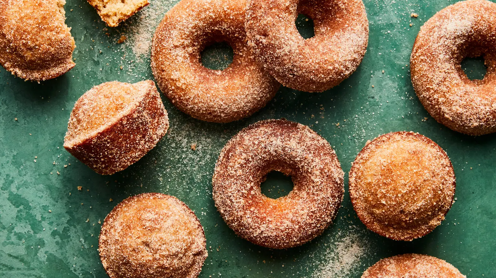

Cider Donuts

Description
Make these insane doughnuts (or muffins if you've got no doughnut mold because that is admittedly a strange thing for a common person to own) and impress your family and friends. Doughnut season is upon us.
Ingredients
- Nonstick cooking spray
- 1.75 cups all-purpose flour
- 1.25 teaspoons baking powder
- 0.75 teaspoon fine sea salt
- 2 teaspoons ground cinnamon
- 0.5 teaspoon freshly grated nutmeg
- 2 sticks salted butter, at room temperature
- 0.75 cup light brown sugar
- 0.75 cup granulated sugar
- 2 Large egg at room temperature
- 1 teaspoon vanilla extract
- 0.5 cup apple cider
Steps
- Heat oven to 350 degrees. Lightly grease 2 (6-cavity) doughnut pans (or a 12-cup muffin tin) with nonstick spray. In a medium bowl, add flour, baking powder, salt, 1 teaspoon cinnamon and nutmeg and whisk to combine. Set aside.
- In the bowl of a stand mixer fitted with the paddle attachment, cream 10 tablespoons/140 grams butter, brown sugar and 1/4 cup/50 grams granulated sugar on medium speed until light and fluffy, 3 to 4 minutes. Add the eggs one at a time and mix until well incorporated after each addition, scraping the bowl as necessary. Beat in the vanilla extract.
- Add the flour mixture and mix on low speed until incorporated. With the mixer running, add the apple cider in a slow, steady stream and mix to combine. Scrape the bowl well to make sure the batter is homogeneous.
- Spoon the batter into prepared doughnut pans, filling them about 2/3 of the way. (You can also do this using a disposable piping bag or a resealable plastic bag with a 1/2-inch opening cut from one corner.) Bake until evenly golden brown and a toothpick inserted into the center of the thickest portion comes out clean, 12 to 15 minutes. Rotate the pans halfway through baking. (If you are making muffins, divide batter evenly between the prepared cups and bake for 15 to 20 minutes, rotating halfway through.)
- While the doughnuts bake, whisk the remaining 1/2 cup/100 grams granulated sugar and 1 teaspoon cinnamon together in a small bowl to combine. In a separate small bowl, melt the remaining 6 tablespoons butter in the microwave. Let the doughnuts cool for 5 minutes after baking, then unmold them from the pans, brush with the melted butter and dredge them in the cinnamon sugar while they are still warm. Serve immediately, or let cool to room temperature.
Home